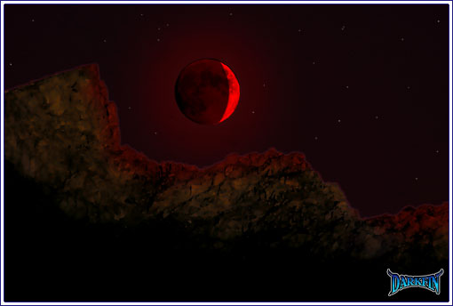
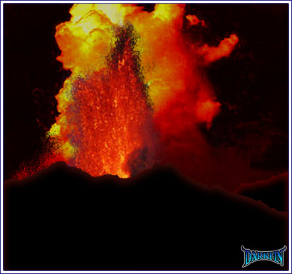
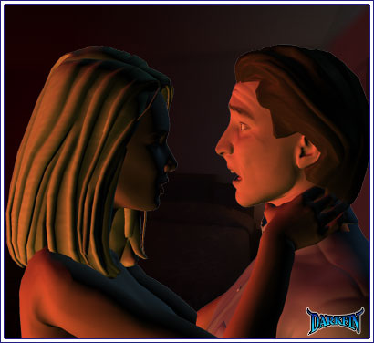
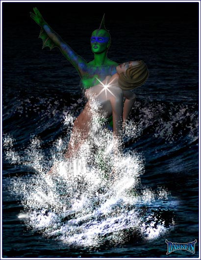

Stephanie (Into phone) I'm inside
Erika (on the other end) Good - you have everything you need, just follow my exact instructions on how to prepare it
Stephanie (Frantically mixing) Are you sure this will succeed?
Erika I double-checked it - we don't have time to run another test
Stephanie DAMN
Erika THE SERUM
Stephanie It's fine, it's fine - it was just a glass of water
Erika No one heard you?
Stephanie (Peering out from the shuttered window) All clear
Erika Keep going!
Stephanie How did you find the solution?
Erika (Growling) Sandy lent a hand
Stepahine Sandy? - who's... wait, Dr. Sanchez? - does he know Karl is alive?
Erika No, he was too busy helping me to ask questions
Stephanie Dear God... IS HE THE ONE WHO TRIED TO POISON YOUR FATHER?
Erika No... not directly
Stephanie Then he must know who - who is behind this?
Stephanie Erika? WHO DID THIS?
Erika That's not important right now - you need to complete this - QUICKLY
Stephanie (Filling a syringe) I'm just about done
Erika Get to his room - the serum has to be administered at exactly 3.4 degrees below his body temperature
Stephanie (Freezing where she is) Ooh - Erika, are you still there?
Erika I felt it, too
Stephanie So many little aftershocks
Erika (Muttering) Those aren't aftershocks
Stephanie What?
Erika Nevermind - keep going
Stephanie What the... ?
Erika WHAT'S HAPPENING?
Stephanie Forgive me, I was just startled by something - I'm going into his room now
Erika Tell me what you saw!
Stephanie Are you near a window?
Erika Yes?
Stephanie Look outside and tell me what you see...
Stephanie Am I imagining it?
Erika No
Stephanie How... how did we go from a waning gibbous moon last night to a waxing crescent moon tonight?

Erika The cycles are off
Stephanie And what is that red glow around it?
Erika Concentrate on my father, Stephanie, PLEASE
Stephanie I'm ready...
Erika Do it!
Stephanie I wish you were here... I'm nervous
Erika You'll be fine... he'll be fine
Stephanie I still don't understand why you're not here?
Erika I'll be there as soon as I can... call me back if anything changes
Erika I need to settle something, first
Griffin (Loosening his tie) Well, hello there!
Griffin This... this has been a glorious day - and it will be an even more glorious night!
Griffin I want to come home like this every night, Rikka
White Robe For someone who was more than content to cower away for so long, why must you interfere now?
Joe My fears will no longer save me - I have nothing and everything to lose
White Robe And lose you will!
White Robe (Calmly following after them) Sticks and stones... honestly, Tiszo, I am disappoin...
Joe You forget who trained you?
Joe Arrogance has always been your Achilles
White Robe And not being able to kill when you should have is always yours
Joe Kill me if you must but your ever-present impatience has already doomed you
Joe It has already doomed us all
White Robe Such a pretty night, don't you think?
Joe (Gasping) FOOL... you have initiated the final cycle too soon!
While Robe (Pinning Joe's neck with its foot) I no longer wish to wait... it's not convenient
Joe You know as well as I do the reason WHY we had to wait for the specific alignment
White Robe Scrawlings in old books are no longer relevant - the Marked One HAS shown is where the vein is - now, we start drilling
Joe She still has a purpose beyond being your compass
White Robe I thought so as well - but since neither one of you will leave these caves alive, we will have to find an alternate solution
Joe (Straining in vain to free himself) You may be... the victor in this battle... but she... will ultimately... stop you
White Robe Who? - my daughter? - she doesn't possess one-third of what you or I have... although I am proud of her for trying
Joe I speak of the other
White Robe A half-dead Marked One? - she, like you, will soon be buried in these ruins
Joe You know to whom I refer
White Robe Certainly not those pests in the military - they'll be lucky not to blow themselves up - ah, and that leaves our lovely green sea creature... no, Aleta Oscura is not an issue - she's an anomaly and like all anomalies, she will vanish as quickly as she appeared
White Robe No, Brother Tiszo, there is no one left to interfere with the cooking - the table has been set - it is now time to feast and relish the beginning of a new age!
Joe Help me, Deirdre, for I only have one choice...
Joe (Kissing her on the lips) She will find you
White Robe I am tired of this game, brother... it has now come to an end!
Blue Robe (Panicked) Master, the walls are collapsing - we must leave before we are trapped!
Blue Robe Our compound... it's being destroyed!
White Robe Do not fret - we will find a new place to gather
Blue Robe But drilling will be more complicated
White Robe Wrong - we now know exactly where to start - tonight has been most successful
Stephanie (Withdrawing the needle) Please work, please work, God, please work...
Stephanie C'mon, c'mon... what if it wasn't enough?
Stephanie YES - that's it - fight, Karl, FIGHT
Stephanie (Inching closer) Karl?
Stephanie NO - PLEASE
Stephanie ERIKA, WHERE ARE YOU?
Stephanie Karl?
Karl (Weak) You haven't kissed me like that in a long time
Stephanie Don't EVER do that to me again!
Karl Is... is she safe?
Stephanie Erika will be here soon
Stephanie (Covering Karl) WHO THE HELL ARE YOU? - GET BACK
Stephanie (Grabbing a syringe) YOU DO NOT WANT ME INJECTING THIS INTO YOU, TRUST ME
Stephanie HECTOR?
Hector Joe is dead
Stephanie WHAT IS GOING ON?
Stephanie That... that can't be!
Karl What... what is happening?
Hector We need to leave... NOW

Griffin (Wheezing) Wh... why?
Erika (Approaching him) Why is the blood of MY FATHER on your hands?
Erika Did you really think I would not check the autopsy results myself?
Griffin (Holding up his hand in defense) I... I have no idea... what you're talking about!

Erika TELL ME TO MY FACE THAT YOU DID NOT POISON HIM
Griffin POISON? - GOD ALMIGHTY, NO - look at me, Rik, you know me better than ANYONE, you know when I'm lying - AM I LYING TO YOU?
Griffin (In tears) HOW COULD YOU EVEN THINK... I love you - I have loved you since the second we met - I would NEVER EVER do anything to harm you or your family
Griffin What insane notion would ever cause you to think differently?
Erika (Facing him again) THE TEST RESULTS, RIF - THEY DON'T LIE
Griffin PLEASE EXPLAIN THIS TO ME SO I CAN UNDERSTAND
Erika My father's meal was deliberately poisoned at the club - the toxin that was found in his system WAS COMMISSIONED BY YOU
Griffin That's not possible
Erika JAVIER SAID SO
Griffin Sanchez?
Erika You do remember your little side project with him?
Griffin It's only an ingredient... for Ursula's new cosmetics line
Erika If you didn't do it, then you damn well know who did!
Erika MORRIGAN
Griffin Morrigan? - what does McBride have to do with this?
Griffin IS THAT MOUNT WIGGINS? - IT'S BEEN DORMANT FOR 2000 YEARS
Griffin RIKKA, WHAT ARE YOU DOING?
Griffin ERIKA
Amethyst Forgive me
Joe Don't give up - it is not the time
Deirdre Someday, my darling daughter, you will understand
